One problem with using POA, (plain-old-arrays),
is that they
aren't resizable, and, when you use a partially-filled array, such as
those we employed for insertion and deletion, you need to keep track
of the number of elements in use separately, like this:
 That sounds like a job for a class, doesn't it?
That sounds like a job for a class, doesn't it?
Go ahead an open InputSimpleArray.java in DrJava. This is similar
to the InputArray program from Section 10.1—Partially
Filled Arrays. Compile and run it and you'll see that you can
enter up to 100 numbers. The program uses a partially-filled array of
double values, along with two additional
variables, capacity and size, to keep track
of how many elements are actually used.
The real problem is that the code is a little complex, and so, when you're given a program where a partially-filled array would really be the ideal solution, you're likely to look for an easier way to get the job done, even if the result is not as good.
After all, a program that works poorly is better than one that doesn't work at all. And, you figure, "if I have to remember how partially-filled arrays work, it's likely that my program won't work at all!"
A Simple Array Class
That's where the OOP principle of encapsulation comes to the rescue; we can hide all of those messy details behind an easy to use interface. Go ahead and try it out. Open DrJava and create a new Java class named SimpleArrayClass.java and then follow along.
Start by taking the variables we used in the InputArray program, and turn them into instance variables , like this:
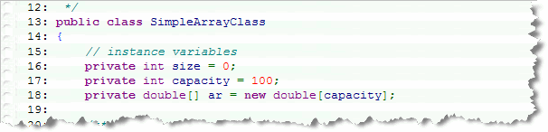
Then, instead of the user keeping track of how many elements there are, the class can do it, by providing a method likeisFull() shown here:
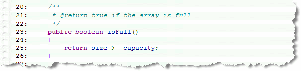
The user doesn't need to know that the variablesize exists;
all they need to know is "can I add an element to this array, or
is it full?".
Note that in the isFull() method, I've checked
to see if size >= capacity, when, technically, the array
is full when size == capacity. This is an example of
defensive programming; making sure that if I make a mistake
elsewhere, accidentally setting size greater than
capacity, it won't crash my program. I'm not
a great fan of defensive programming, though, because it
misleads those who read the code into believing that size
could have a valid value greater than capacity,
which is not the case.
Adding Values
Because the actual array is a private instance variable, the
elements are "hidden" from the users of SimpleArrayClass.
To allow the user to add an item to the array, we can write an
add() method, that works like this:
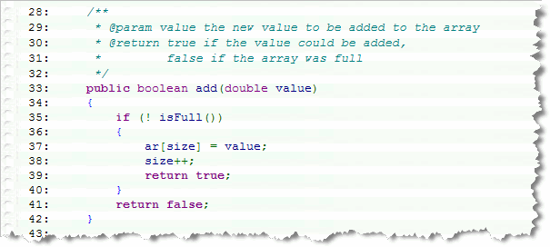
Note that the method:- Checks to see if there is still room in the array by
using the
isFull()method. (Note the use of the NOT operator in the condition.) - If the array isn't full, then we simply add
the element at the correct position, (using the
sizeinstance variable), update the variable, and returntrueto signal that the element was added successfully. - If there wasn't enough room for the element, then the
method returns
falseand doesn't modify either the array or the other instance variables.
As you can see, the user of your class doesn't have to know about the
size and capacity variables to use the class
at all.
Displaying Values
To display the individual values, we could write a getElement()
method, that allowed use to extract a particular value. I'll leave that
as "an exercise for the reader". Instead, let's just overload the
toString method (inherited from the Object
class), to "print" the entire array, element by element,
like this:
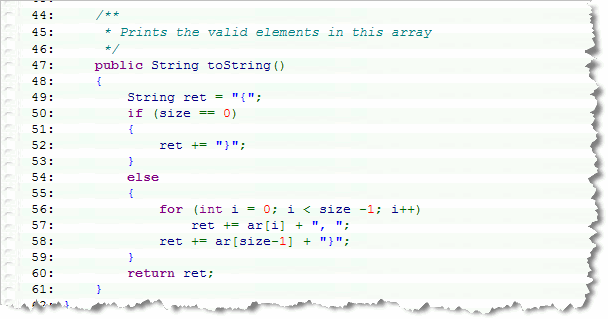
The version oftoString() shown here returns a representation
similar to one that could be used to initialize the array in the first place.
Testing the Class
To test the SimpleArrayClass, save InputSimpleArray.java as InputSimpleArrayClass.java and change the class name. Then, modify the program so that it uses your new encapsulated array class instead of individual variables.
Here's how your new program should start:
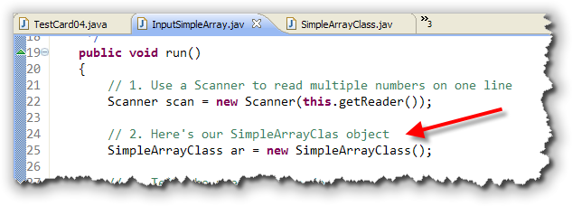
Note that this version of the program creates aScanner object
to capture the user's input, just as the previous one did, but then, instead
of creating an array variable, you should create a SimpleArrayClass object
instead.
Next, we ask the user to input 100 real numbers. The original program
uses the length of the array to tell the user how many
numbers to enter; with the SimpleArrayClass though, we can't do
that, because the internal array is private, and we didn't
provide a length() method, (although we easily could have).
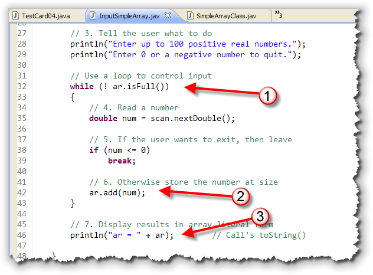
The main loop is similar to the earlier program, with these differences:- Instead of checking for a specific value, the loop call's
the
isFull()method to determine whether to continue going. If ar is not full, then we enter the loop. This, you'll recall, is the loop's necessary bounds. - Inside the loop, we read the value, using the
Scannerobject, and then use theadd()method to add it to the array, if it is a positive number. - After the loop ends, instead of using another loop to
print the contents of the array, (something that we couldn't do anyway,
given the design of our class, the test program just uses concatenation
to print the contents of ar; the
toString()method added to SimpleArrayClass provides the formatting.
Here's what the program looks like when it runs:
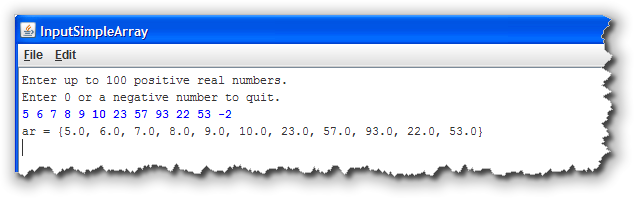
Try It Yourself
Once you've finished SimpleArrayClass and the InputSimpleArrayClass test program, run the code and make sure you get the same output as the InputSimpleArray program. Both programs should work exactly the same.
Resizable Arrays
You could easily continue to expand SimpleArrayClass,
adding methods to
access, insert, find, sort, and delete elements, often simply by
employing the "built-in" methods supplied by the Arrays class.
You'd certainly want to add a constructor, so users could create
SimpleArrayClass objects using sizes other than 100.
But, while the SimpleArrayClass hides some of the complexity behind using partially-filled arrays, it doesn't address another problem: the need to plan for the worst case when deciding how big to make your array.
Because the size of an array is fixed, once it's been created,
the user has to rely on the isFull() method to know if its
safe to add elements to the array, or to check the value returned from
the add() method, to make sure that the element was added
to the array.
Even though arrays aren't resizable, though, that doesn't mean that your class has to act that way. By automatically creating a new, larger internal array each time the existing array fills up, and then copying the elements from the existing array into the new storage, you can make your array class appear to the user as a resizable array.
Let's try building our own class like that!
The ResizableArrayClass
Use DrJava to save SimpleArrayClass.java as ResizableArrayClass.java, and then change the class name. Make sure your file compiles, and then make the changes shown here.
- Instead of setting
capacityto 100, set it to 1. (You wouldn't do this in "real life". Instead, you'd start with some more reasonable starting value; 10, 16, and 32 are often used):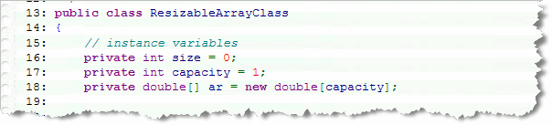
- Because the array is now resizable, there's no need to
return a "success report" from the
add()method; change the return type tovoid. Inside the method, we still need to check and see if the array is full. When it is, however, instead of returningfalseto indicate that the element couldn't be added, just call the internalexpand()method, and then insert the element in the new space that's created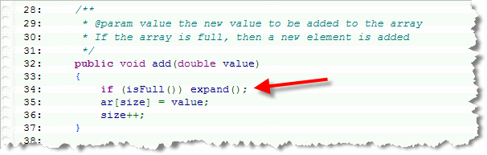
- To expand the array, increment
capacity, allocate a new array, copy the old array elements into the new array, and then assign the instance variablearto "point to" the newly allocated (and larger) memory.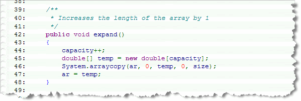
As you can see here, I've expanded the array by a single element each time a new value is added. Again, you wouldn't do this in "real life", but would double the size or add some other, larger, fixed size. I've expanded by one just to show the effect.
Using The ResizableArrayClass
To test your program, use DrJava to save InputSimpleArrayClass.java to a new file, InputResizableArrayClass.java, change the class name, and then modify it as shown here. As you can see, the new version is both shorter and simpler:
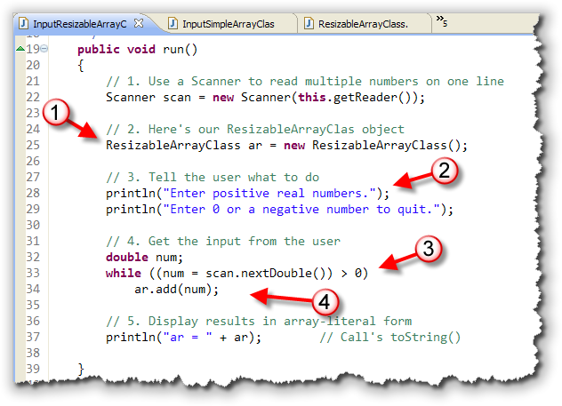
The program- Creates a
ResizableArrayClassobject, rather than aSimpleArrayClassobject, as you'd expect. - Instead of telling the user to enter 100 numbers, (and adding a corresponding loop test), the program prompt asks them to enter any number of positive integers. The program will no longer stop when a particular number of input values have been entered.
- Rather than using a "loop-and-a-half", with the necessary
bounds and the
ifstatement controlling the user's exit decision, we can use a simpler inline test to read the user's input, store it in a variable, and check it against zero, all on one line. - If the user enters a positive number, the body of the loop now contains a single statement that adds the number to the resizable array.
Try It Yourself
Once you've finished ResizableArrayClass and the InputResizableArrayClass test program, run the code and make sure you get the same output as before. Again, both programs should work exactly the same.
Generic Collections and the ArrayList Class
In addition to arrays, the Java Class Libraries include
many built-in classes designed to store data elements and to manipulate them
in different ways. The general term for these kinds of classes is
data structures.
If you're a Computer Science major, you'll even take a course devoted entirely to
these data structures.
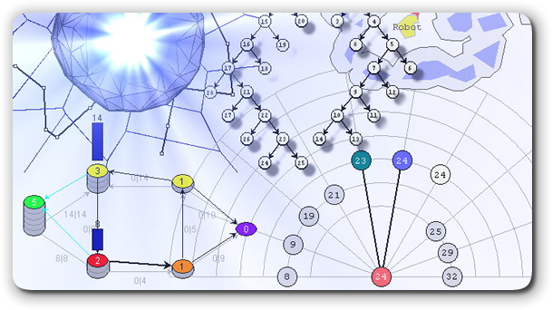
In Java, these data structure classes are known as the Java Collection classes.Unsafe Collections
Before the Java Collection classes were introduced, Java had a set of rudimentary
data structures designed to store generic Object references. The most commonly
used of these was the Vector class.
You probably know the difference between bitmap and vector graphics, have heard the term disease vector related to a potential bird flu epidemic, or referred to wind vectors while sailing, or in a physics class. You might even be familiar with the video-game character Vector, from Sonic the Hedgehog, shown here.
What, you might wonder, do all of these have in common with Java's
Vector class? Good question.
The answer is: not a thing!
The Vector class implements an "automatic" array,
similar to the one that you created at the end of the last section.
Like the class that you wrote, when you add an eleventh element to a ten-element
Vector, the Vector will automatically
resize itself.
When you place an item in a
Vector, though, the Vector itself doesn't keep track of what
"kind" of thing you stored, (unlike your hand-written resizable array class, which can
only store doubles. When using the original
Vector class, it is up to you as a programmer to
cast each element to the actual correct type after retrieving it from the
collection, but before using it.
Because this leads to many different kinds of runtime errors, these earlier
collection classes, like Vector are known as unsafe collections.
Today, the javac compiler will usually warn you not to use them.
Generic Collections and the ArrayList
Starting with Java 5 a new breed of data structures was introduced that allowed
you to specify the type of element stored in a collection, by using
a type parameter. This facility is known as generics. The generic
collection class that's most similar to the regular array class
is called the ArrayList, and that's what we'll look at in
the remainder of this chapter.
Remember, though, that if you compile your code using the new generic classes, your code won't run on pre-Java 5 Virtual Machines. This is a Java 5 and up feature.
As you saw earlier, one of the problems with using arrays, is that they are fixed-size. If you plan for ten elements when you create your array, you can't change your mind after the program is running, and add an eleventh element.
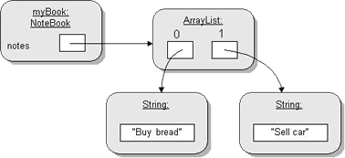
You can get around that, though, by creating your own class, like theResizableArrayClass, that hides those details with a
private internal array and then writing code to
reallocate a new array and copy the old elements when the
original array elements are filled.
The ResizableArrayClass isn't a perfect solution, though,
because you have to create a separate ResizableArrayClass
for each kind of element you want to store, unlike regular arrays,
where you can store any kind of object or primitive type.
Fortunately, the new Java 5 collection classes change this.
The Java generic growable array class is called the ArrayList.
With the ArrayList:
- you can store any kind of object-based element. You can have an
ArrayListofString,Card,Integer, and so on. -
while you can store any kind of object-based element, you can't
store primitive values, like you can with regular arrays. If you want to
create an
ArrayListofint, you have to use theIntegerwrapper class type instead. Then, when you store and retrieveintvalues in the collection, they are automatically converted to and from the wrapper type. This process is called auto boxing.
Because of this "boxing", using ArrayLists to store
primitive types is much less efficient than using arrays. Even
for object types, using ArrayList may be a little slower
than the equivalent built-in array.
Also, you may find that using the ArrayList is
a little less convenient because instead of using
bracketed subscripts to store and retrieve elements, you have to use
a set() or get() method instead.
Usually, though, the small loss in efficiency and convenience is more
than made up by the greater convenience of auto-sizing and by the
large number of built-in methods that can considerable reduce the amount
of code you need to write.
ArrayList Syntax
The ArrayList class is not
built in to the
Java language like the array type is. Also, the ArrayList is not
part of the automatically included java.lang package, like the
String and Math classes are.
The ArrayList is part of the java.util package,
so to use them in your programs, you'll need to add one of these
import statements to each file that use ArrayList class:
import java.util.ArrayList; // class-specific import
import java.util.*; // wild-card package import
Creating an ArrayList
You create an ArrayList object using syntax
that is similar to the syntax for creating other object
variables and then calling an object constructor. Since
ArrayLists are automatically sized, you don't
need to specify their size when creating them, like you do with
an array constructor:
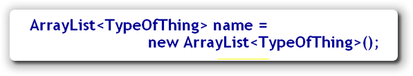
The biggest difference between a regular object constructor and a generic type constructor, likeArrayList,
is the ArrayList type parameter, which must appear
right after the name ArrayList, enclosed in
angle brackets, kind of like an HTML tag.
When you supply a type parameter like this, it actually defines
an entirely new class, such as ArrayList<Integer> or
ArrayList<Double>. The type parameter
actually becomes part of the class name, used both when you
declare the variable and when you invoke the constructor.
The Deck Example
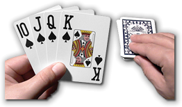
Rather than just giving you a list of syntax, let's put theArrayList to work. Earlier in this chapter you used
inheritance and composition (along with enumerated types), to build
a reusable PlayingCard class.
Now, let's
create a Deck class and use an internal ArrayList
to store the PlayingCard objects.
To get started:
- Using DrJava, create a new class named
Deck. Add your to comments to the top of the class. Add animportfor thejava.utilpackage (where theArrayListclass lives). - Inside the class,
add an instance variablenamedcardsthat is anArrayListcontainingPlayingCardobjects. Just create the instance variable itself; don't initialize it. - Now, write a constructor for your class. It doesn't
have to take any parameters. Inside the constructor, initialize
the field named
cardsusing theArrayListconstructor.
If you've done everything right, your class should compile with no
errors, and it should look something like this:
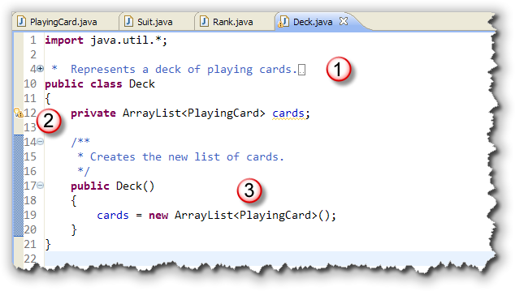
Now, it's on to adding elements to theDeck.
Adding ArrayList Elements
When you first create an ArrayList, it has the potential
for holding ten elements, without being resized. This is known as
the ArrayList's capacity. However, even though your
list has an initial capacity of ten elements, it doesn't actually contain
any elements; instead, it is completely empty.
The number of valid elements actually stored in the list is known as the
ArrayList's size. With arrays, size and capacity are
identical, but with ArrayLists they are separate concepts.
Most of the time, you don't need to worry about capacity at all, since
the list will resize itself as needed.
Adding Elements
Instead of using subscripts to place element in the predefined "slots", like you do with an array, you actually add the element to the list, which does two things:
- It first creates the appropriate slot
- and then, places the element into it.
There are actually two versions of the ArrayList add()
method. The first version, add(<T>), adds the element
(<T>) to the end of the ArrayList, after
the last valid element. If you exhaust the capacity of the ArrayList
when calling the add() method, then the list is automatically
expanded as necessary.
Inserting Elements
The second version of add, add(index, <T>), really
should be named insert(), since it places an
element at a particular index position. When you use this "insert"
version of the add() method, the element that was originally
in the position specified is moved one position to the right, the element
in that position is moved to right, and so on.
As with the
first version of add(), the ArrayList
capacity is expanded when you insert additional elements.
How Many Elements?
When working with partially-filled arrays, we had to keep track of the
current card by using a variable. We don't have to do that with the
ArrayList class, though, because the class automatically
keeps track of how many elements the list contains.
You can retrieve that information by calling the size() method.
If we want to find out if our deck is empty, for instance, we can use
size(). If cards.size() is 0, then the deck
is empty. The ArrayList also has an isEmpty()
method that does the same thing.
More Deck Methods
Rather than populating the ArrayList in our
Deck constructor, we'll leave it empty so that we
can use the same class for several different games. After all,
not all games require just the 52 cards of the standard deck.
To allow the user of the Deck class to populate
it, we'll need to supply an addCard() method, along with a
couple other methods that make working with the Deck
class a little easier.
Here are the methods you should add to Deck:
- the
addCard()method takes a singlePlayingCardas its parameter and then uses theArrayList add()method to place it at the end of thecards ArrayList:
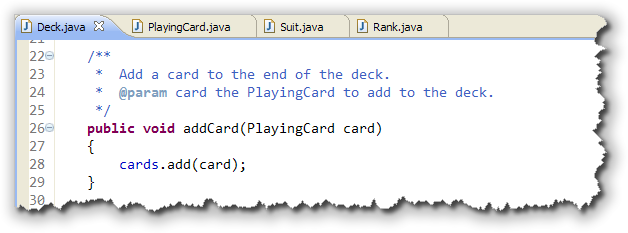
- the
getCardsRemaining()method returns the number ofPlayingCards remaining in the deck. You can use theArrayList size()method to determine this value:
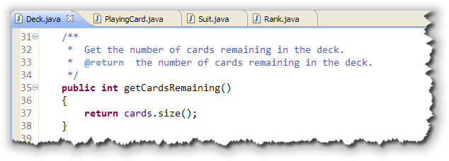
- the
hasMore()method returnstrueif there are more cards left. You can use thegetCardsRemaining()method to generate the return value for this method, or you can usesize()orisEmpty()as I've done here:
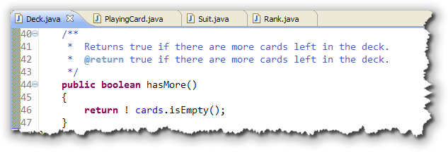
Once you've written these three methods, make sure your class compiles (no yellow marks), and we'll look at accessing the cards we've added to the deck.
Accessing ArrayList Elements
With arrays, you use a subscripted array name on the
left-hand-side of an assignment expression to place a value into
a specific slot in the array. With an ArrayList, though,
the square-bracket "subscript operator" doesn't work; you have to
call a method instead.
The easiest way to see how this works is to compare an array assignment
to the equivalent operation with an ArrayList.
Storing Objects
If you want to store a PlayingCard object named
card in the cards list, instead of writing
cards[idx] = card;
like you would when using an array, you use the set()
method, like this:
cards.set(idx, card);
Note that the relative positions of the words cards,
idx, and card are the same in both cases.
Retrieving Elements
Similarly, to retrieve an element, instead of using a subscripted array name on the right of an assignment, like this:
card topCard = cards[2];
you use the ArrayList get() method, passing in the
appropriate index value for the element you want to select, like this:
PlayingCard topCard = cards.get(2);
Please note that the get() method
does not remove the specific element from the ArrayList,
but simply returns a reference. If you want to remove the element
from the list after retrieving it, you need to use the ArrayList
remove() method like this:
PlayingCard topCard = cards.remove(2);
The remove() method returns a reference to the list element,
removes the reference from the list, and then "closes up" the remaining
elements by shifting those to the right of the removed element towards
the beginning of the list.
Other ArrayList Methods
Although storing and retrieving objects in an ArrayList
requires more code that when using an array, many common operations
that you have to perform "by hand" when using arrays are automatic
when using ArrayLists. That means that using
ArrayLists can actually make your code much simpler,
rather than more complex.
For instance:
- Since you don't have to explicitly size an
ArrayList, all of the complex code required to process partially-filled arrays is eliminated. This also saves you memory, because you don't need to always include unneeded elements just in case. - To see if a particular item is contained in an
ArrayList, you don't need to use a loop and search through the list manually; instead, you can just call thecontains()method. - If you already know that a particular object is located in an
ArrayList, you can retrieve its position usingindexOf(), just like you could withStrings. - To randomly order the elements in an
ArrayList, you can use thestatic shuffle()method from theCollectionsclass. - Finally, you can remove all of the elements from an
ArrayListwith theclear()method.
When you wrote your own array classes, like those at the beginning of this section, these were all things that you had to do on your own by writing various loops and comparisons.
Even More Deck Methods
OK, let's put these methods to work by adding a few more methods to our
Deck class.
- Every deck needs to deal cards, right? The
dealCard()method takes the top card off the deck and returns it. You can use theArrayList remove()method to both get a reference to the top card, and to remove it from theArrayList. If the cards list is empty, then thedealCard()method should returnnull. Here's what your code should look like:
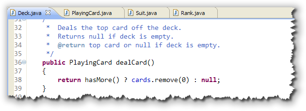
- The
removeAllCards()method empties the deck. You can do this by using a singleArrayListmethod like this:
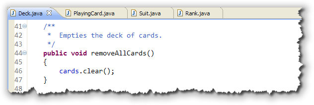
- The
shuffle()method shuffles the deck. (Surprise!) You can do this by simply callingCollections.shuffle()and passing thecards ArrayListinstance variable as a parameter. (Of course, you have to have theCollectionsclass imported.) Here's what theshuffle()method should look like:
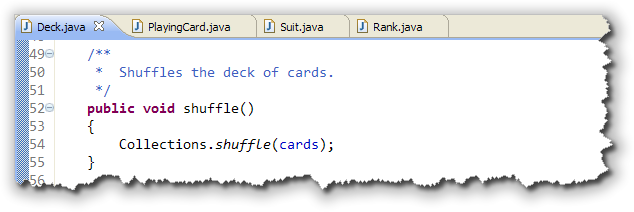
CardDeckDemo
When you're done, open the CardDeckDemo program, which you'll find in this chapter's code folder.
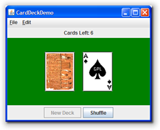
When you run the program, click the New Deck button to create a new deck of cards. As you click the back of the top card, it will be flipped over and placed on the table.Of course the deck is originally created unshuffled. If you want to see random cards dealt, then click the Shuffle button just after creating a new deck. Go ahead and run CardDeckDemo, and have fun.
Try It Yourself
Once you've finished the Deck class,
compile and run CardDeckDemo. Shuffle and then
flip over some cards.

ArrayList Summary
ArrayListis a class that encapsulates a resizable array. When creating anArrayListvariable or object, you must specify the kind of elements that the list will contain. You place the type inside angle brackets after the nameArrayList. This is called the type parameter and types that use them are called generic types.- Earlier versions of Java's collection classes stored generic object references. These are called unsafe collections because it is up to the programmer to remember the type of each element and to cast each element to the correct type before using it.
- The
ArrayListclass can only hold object variables. To create a list that works with primitive types, declare the variable using the corresponding wrapper type (likeInteger). When you store values in the list, Java will silently convert to the wrapper type (a process called boxing), and then convert back to the primitive type when you retrieve the values (called, as you'd expect, unboxing). - Using an
ArrayListinstead of an array can make your programs simpler, but they may not be as efficient. Especially when processing primitive types, you'll usually find the built in arrays work faster. - To add an element to a list, call the
add()method. The single-argument version adds the value to the end of the list, while the two-argument version inserts the element at the position you specify, moving all other elements to the right. In both cases, the size of the list increases by 1. - You can find out the number of active elements in your
list by calling the
size()method, or the predicateisEmpty()method to check if there are any elements at all. - To store and retrieve elements from a list, use the
set()andget()methods. Both methods take an index parameter that specifies which element should be affected. The position of the parameters is designed to mimic the traditional array bracket notation.